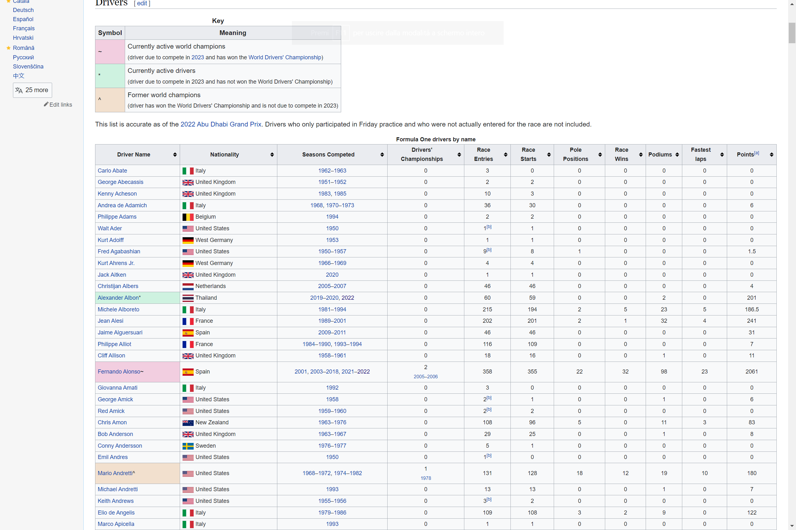

A real application of web scraping in R

To conclude this brief introduction to web scraping we want to use the rvest package in a real word application of web scraping. The goal is to scrape data from Formula 1 Wikipedia’s voice and create a CSV file containing the name, the nationality, the number of podiums and some other statistics for every pilot.
The table we are going to scrape is the following:

If you haven’t done so, you need to install the rvest package:
install.packages("rvest")and then load it:
library(rvest)HTTP GET request
The GET request is the easiest part of scraping, we just need the following line of code:
link <- "https://en.wikipedia.org/wiki/List_of_Formula_One_drivers"Parsing HTML content and getting attributes
Again we repeat what we did before with the NYT example:
page <- read_html(link)Searching in the HTML code we find that the table is a table element with the sortable attribute:

Therefore we run the following lines of code:
drivers_F1 <- html_element(page, "table.sortable") %>%
html_table()In the chunk of code above, the html_table function is used to render the HTML code into tables.
To inspect it, we display the first and last observations, and the structure of the dataset:
head(drivers_F1) # first 6 rows## # A tibble: 6 × 11
## `Driver Name` Natio…¹ Seaso…² Drive…³ Race …⁴ Race …⁵ Pole …⁶ Race …⁷ Podiums
## <chr> <chr> <chr> <chr> <chr> <chr> <chr> <chr> <chr>
## 1 Carlo Abate Italy 1962–1… 0 3 0 0 0 0
## 2 George Abecas… United… 1951–1… 0 2 2 0 0 0
## 3 Kenny Acheson United… 1983, … 0 10 3 0 0 0
## 4 Andrea de Ada… Italy 1968, … 0 36 30 0 0 0
## 5 Philippe Adams Belgium 1994 0 2 2 0 0 0
## 6 Walt Ader United… 1950 0 1[b] 1 0 0 0
## # … with 2 more variables: `Fastest laps` <chr>, `Points[a]` <chr>, and
## # abbreviated variable names ¹Nationality, ²`Seasons Competed`,
## # ³`Drivers' Championships`, ⁴`Race Entries`, ⁵`Race Starts`,
## # ⁶`Pole Positions`, ⁷`Race Wins`tail(drivers_F1) # last 6 rows## # A tibble: 6 × 11
## `Driver Name` Natio…¹ Seaso…² Drive…³ Race …⁴ Race …⁵ Pole …⁶ Race …⁷ Podiums
## <chr> <chr> <chr> <chr> <chr> <chr> <chr> <chr> <chr>
## 1 Emilio Zapico Spain 1976 0 1 0 0 0 0
## 2 Zhou Guanyu* China 2022 0 22 22 0 0 0
## 3 Ricardo Zonta Brazil 1999–2… 0 37 36 0 0 0
## 4 Renzo Zorzi Italy 1975–1… 0 7 7 0 0 0
## 5 Ricardo Zunino Argent… 1979–1… 0 11 10 0 0 0
## 6 Driver Name Nation… Season… Driver… Race E… Race S… Pole P… Race W… Podiums
## # … with 2 more variables: `Fastest laps` <chr>, `Points[a]` <chr>, and
## # abbreviated variable names ¹Nationality, ²`Seasons Competed`,
## # ³`Drivers' Championships`, ⁴`Race Entries`, ⁵`Race Starts`,
## # ⁶`Pole Positions`, ⁷`Race Wins`str(drivers_F1) # structure of the dataset## tibble [869 × 11] (S3: tbl_df/tbl/data.frame)
## $ Driver Name : chr [1:869] "Carlo Abate" "George Abecassis" "Kenny Acheson" "Andrea de Adamich" ...
## $ Nationality : chr [1:869] "Italy" "United Kingdom" "United Kingdom" "Italy" ...
## $ Seasons Competed : chr [1:869] "1962–1963" "1951–1952" "1983, 1985" "1968, 1970–1973" ...
## $ Drivers' Championships: chr [1:869] "0" "0" "0" "0" ...
## $ Race Entries : chr [1:869] "3" "2" "10" "36" ...
## $ Race Starts : chr [1:869] "0" "2" "3" "30" ...
## $ Pole Positions : chr [1:869] "0" "0" "0" "0" ...
## $ Race Wins : chr [1:869] "0" "0" "0" "0" ...
## $ Podiums : chr [1:869] "0" "0" "0" "0" ...
## $ Fastest laps : chr [1:869] "0" "0" "0" "0" ...
## $ Points[a] : chr [1:869] "0" "0" "0" "6" ...Now that we have a tibble (a sort of dataframe used in the tidyverse universe), we just need to select the variables of interest and eliminate the last row that contains the name of the variables:
drivers_F1 <- drivers_F1[c(1:4, 7:9)] # select variables
drivers_F1 <- drivers_F1[-nrow(drivers_F1), ] # remove last rowAt this point we may want to clean our data. For example, we notice that Drivers' Championships has a small formatting issue: it returns not only the number of championships the driver won, but also the years of the victories. To extract only the number of victories (without the years) we use the substr() function:
drivers_F1$`Drivers' Championships` <- substr(drivers_F1$`Drivers' Championships`,
start = 1, stop = 1
)With this code, we actually extract only the first character since we start at 1 and stop at 1. At the moment, the maximum number of championships won by a driver is 7 (Lewis Hamilton), so it is fine to extract only the first digit.
Et voila! With only a few lines of code, we scraped a table and we are now ready to perform our analysis.
If you want to save the dataset, you can always do so:
write.csv(drivers_F1, "F1_drivers.csv", row.names = FALSE)Analysis on the database
To convince you that this is a real database, we will now answer some simple questions.
First of all, we load the tidyverse package:
library(tidyverse)- Which country has the largest number of wins?
drivers_F1 %>%
group_by(Nationality) %>%
summarise(championship_country = sum(as.double(`Drivers' Championships`))) %>%
arrange(desc(championship_country))## # A tibble: 48 × 2
## Nationality championship_country
## <chr> <dbl>
## 1 United Kingdom 20
## 2 Germany 12
## 3 Brazil 8
## 4 Argentina 5
## 5 Australia 4
## 6 Austria 4
## 7 Finland 4
## 8 France 4
## 9 Italy 3
## 10 Netherlands 2
## # … with 38 more rows- Who has the most Championships?
drivers_F1 %>%
group_by(`Driver Name`) %>%
summarise(championship_pilot = sum(as.double(`Drivers' Championships`))) %>%
arrange(desc(championship_pilot))## # A tibble: 868 × 2
## `Driver Name` championship_pilot
## <chr> <dbl>
## 1 Lewis Hamilton~ 7
## 2 Michael Schumacher^ 7
## 3 Juan Manuel Fangio^ 5
## 4 Alain Prost^ 4
## 5 Sebastian Vettel^ 4
## 6 Ayrton Senna^ 3
## 7 Jack Brabham^ 3
## 8 Jackie Stewart^ 3
## 9 Nelson Piquet^ 3
## 10 Niki Lauda^ 3
## # … with 858 more rowsSorry Michael, it looks like Lewis dethroned you.
- Is there a relation between the number of Championships won and the number of race pole positions?
drivers_F1 %>%
filter(`Pole Positions` > 1) %>%
ggplot(aes(x = as.double(`Pole Positions`), y = as.double(`Drivers' Championships`))) +
geom_point(position = "jitter") +
labs(y = "Championships won", x = "Pole positions") +
theme_minimal()
As expected, there seems to be a relationship between the number of pole positions and the number of Championships won. To quantify this relationship, we could build a linear model but this is beyond the scope of the article.